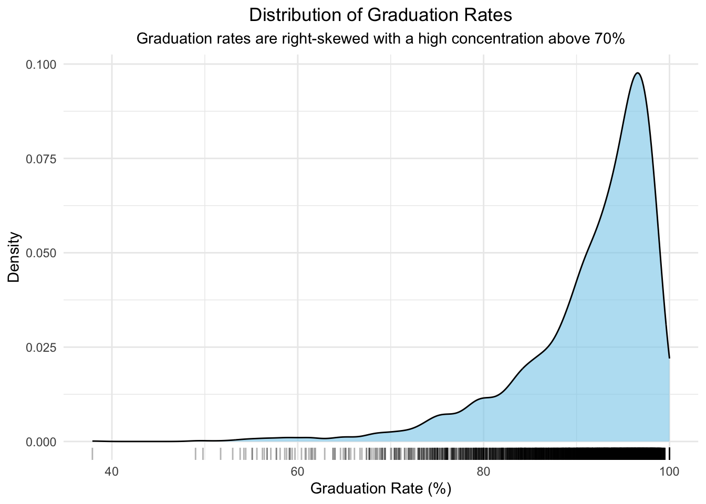
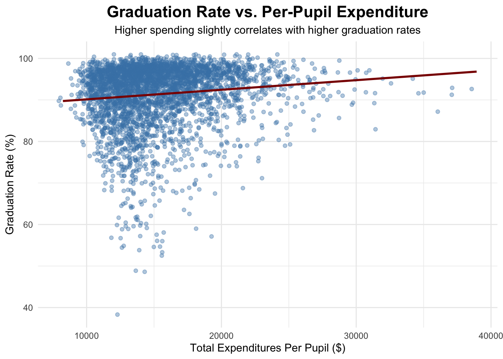

| Category | Metric | Value |
|---|---|---|
| Graduation | Avg Graduation Rate (%) | 91.4 |
| Graduation | SD Graduation Rate (%) | 7.5 |
| Expenditure | Avg Expenditure per Pupil (USD) | 15348.4 |
| Expenditure | SD Expenditure (USD) | 3752.3 |
| Demographics | Avg % Minority Students | 19.4 |
| Demographics | Avg % Low-Income Students | 32.7 |
| Resources | Avg Student-Teacher Ratio | 11.7 |
| Resources | SD Student-Teacher Ratio | 1.9 |
| Size | Avg Cohort Size | 247.6 |
| Size | SD Cohort Size | 280.6 |
Analysis
This page presents an in-depth statistical exploration of graduation outcomes across Massachusetts school districts.

1. Motivation and Research Question
Educational outcomes are significantly influenced by a complex interplay of racial demographics, socioeconomic factors, and financial investments. In Massachusetts, public school districts exhibit varied graduation rates and SAT performances.
Research Questions
- How do financial investments per student correlate with graduation rates?
- How do racial composition and income levels affect educational outcomes?
- What models best explain the observed variations?
Guiding Question
How do funding and structural inequalities together shape graduation outcomes across school districts?
2. General Information Analysis
Summary Statistics
Observation: Across Massachusetts districts, the average graduation rate is high (91.4%), though notable variation remains.
Per-pupil expenditure averages around $15,348, but districts differ substantially in resources and demographics.
On average, about 19.4% of students are from minority backgrounds and 32.7% are low-income, reflecting persistent socioeconomic diversity that may influence outcomes.
2.1 Distribution of Graduation Rates
Although Massachusetts districts generally exhibit high graduation rates, the right-skewed distribution suggests that a small subset of districts consistently underperform.
This highlights that structural inequalities persist despite overall strong outcomes.

Big Picture Implication:
Even with an overall high graduation rate, not all districts benefit equally, suggesting that systemic factors such as racial and economic disparities continue to impact student success.
2.2 Distribution of Per-Pupil Expenditure
The distribution of per-pupil expenditure shows substantial variation, with most districts spending moderately but some spending considerably more.
This reflects unequal financial investment across districts, reinforcing the connection between resource allocation and graduation outcomes.

Big Picture Implication:
Funding disparities likely play a key role in graduation gaps, but expenditure alone may not fully address deeper structural inequalities.
2.3 Racial Composition Across Districts
The racial composition across Massachusetts districts shows a high concentration of White students, with most districts having a predominantly White population.
In contrast, the percentages of Asian, Black, and Hispanic students are generally low, with most districts having less than 10% representation for these groups.
Big Picture Implication:
The racial imbalance across districts suggests persistent segregation and structural inequalities. Districts with higher minority populations may face systemic challenges that affect graduation outcomes and resource allocation.
2.4 Minority Composition vs. Per-Pupil Expenditure
Definition of Minority Students:
In this analysis, “Minority Students” are defined as the combined percentage of individuals identifying as Black, Hispanic, Asian, Multi-Race, American Indian, or Pacific Islander within each district.
The total minority percentage is calculated by summing the proportions of these six groups.
The scatter plot examines the relationship between minority student percentages and per-pupil expenditure across Massachusetts districts from 2008 to 2023.
While a slight positive trend exists, the relationship is weak and highly scattered.
Most districts have low minority percentages (below 30%), and expenditure levels vary widely across all minority levels.
This indicates that minority composition alone does not explain funding disparities.
Big Picture Implication:
While racial composition is an important dimension of structural inequality, it does not fully explain disparities in school funding.
The observed variation implies that other systemic factors — such as poverty concentration, urbanization, historical segregation patterns, and political resource allocation — likely play more significant roles in shaping funding inequities across districts.
3. Regression Analysis
In this project, we systematically built and compared four different regression models:
- A Simple Linear Regression between per-pupil expenditure and graduation rates.
- A Simple Linear Regression between low-income percentage and graduation rates.
- A Multiple Regression incorporating expenditure, socioeconomic status, racial demographics, student-teacher ratios, and cohort size.
- A Multiple Regression with an Interaction Term between expenditure and low-income percentage.
Each step progressively added complexity to better capture the structural inequalities shaping graduation outcomes across Massachusetts school districts.
3.1 Simple Linear Regression: Spending vs Graduation
A simple linear regression estimates the association between total expenditures per pupil and graduation rates across Massachusetts districts.
3.1.1 Scatterplot and Regression Line

Interpretation:
- Higher per-pupil spending is positively associated with graduation rates.
- However, the relationship appears weak and dispersed, especially at lower spending levels.
- Graduation rates are heavily concentrated between 85%–100%, suggesting that factors beyond spending likely drive performance.
3.1.2 Linear Regression Model
| term | estimate | std.error | statistic | p.value |
|---|---|---|---|---|
| (Intercept) | 87.8329 | 0.5214 | 168.4560 | <0.01 |
| Total_Expenditures_Per_Pupil | 0.0002 | 0.0000 | 6.9988 | <0.01 |
| r.squared | adj.r.squared | p.value |
|---|---|---|
| 0.0134 | 0.0132 | <0.01 |
Interpretation:
- The intercept (87.83) indicates that districts with zero reported per-pupil expenditure would have a predicted graduation rate of about 87.8%, although such extrapolation is not practically meaningful.
- The coefficient for per-pupil spending (0.0002) implies that each additional $10,000 investment per pupil is associated with an approximately 2.0 percentage point increase in graduation rates.
- Both the intercept and the spending coefficient are highly statistically significant (p < 0.01), suggesting that the observed associations are unlikely due to random chance.
- However, the R-squared value is extremely low (1.34%), indicating that per-pupil spending explains only a very small portion of the variance in graduation rates across districts.
- Conclusion: While there is a statistically detectable relationship, spending alone is far from sufficient to account for differences in student outcomes.
3.1.3 Regression by Majority Race Group
Separate regression models are estimated for school districts grouped by their majority racial composition to assess whether the impact of spending differs across demographic contexts.
Only Majority White, Black, and Hispanic groups are shown here due to sufficient sample sizes. Other groups are omitted to ensure stable regression estimates.
| majority_race | r.squared | p.value |
|---|---|---|
| Majority White | 0.0281 | <0.01 |
| Majority Black | 0.1497 | 0.0125 |
| Majority Hispanic | 0.1696 | <0.01 |
Interpretation:
Although all three groups show statistically significant relationships (p < 0.05), the strength of association differs:
- Majority Hispanic districts have the highest R-squared (0.1696), suggesting a stronger link between spending and graduation rates.
- Majority Black districts also show a notable relationship (R-squared = 0.1497).
- Majority White districts have a much weaker association (R-squared = 0.0281).
These results imply that increased spending may have a greater marginal impact in districts serving historically underserved racial groups.
3.2 Simple Regression: Low-Income Percentage and Graduation Rates
A simple linear regression estimates the association between the percentage of low-income students and graduation rates across Massachusetts districts.
3.2.1 Scatterplot and Regression Line
Interpretation:
Higher percentages of low-income students are associated with noticeably lower graduation rates. The negative slope of the regression line suggests that as low-income concentration increases, graduation outcomes decline. The relationship appears stronger than in the previous spending model, with a clearer downward trend.
3.2.2 Linear Regression Model
| term | estimate | std.error | statistic | p.value |
|---|---|---|---|---|
| (Intercept) | 101.0230 | 0.1490 | 677.9374 | <0.01 |
| Low_Income_Percent | -0.2947 | 0.0039 | -75.7425 | <0.01 |
| r.squared | adj.r.squared | p.value |
|---|---|---|
| 0.6145 | 0.6144 | <0.01 |
Interpretation:
The regression analysis shows a strong negative relationship between the percentage of low-income students and graduation rates. For every 1 percentage point increase in low-income concentration, the graduation rate declines by about 0.29 points. The relationship is highly statistically significant (p < 0.01). The model explains around 61% of the variation in graduation rates (R² = 0.6145), suggesting that socioeconomic disadvantage is a major driver of educational outcomes across districts.
3.2.3 Regression by Majority Race Group
Majority Black Majority Hispanic Majority White
41 141 3419 | majority_race | r.squared | p.value |
|---|---|---|
| Majority White | 0.5713 | <0.01 |
| Majority Black | 0.2029 | <0.01 |
| Majority Hispanic | 0.3929 | <0.01 |
4. Multiple Regression: Comprehensive Model
A multiple linear regression is used to estimate the association between several district characteristics and graduation rates across Massachusetts.
4.1 Multiple Regression Model
| term | estimate | std.error | statistic | p.value |
|---|---|---|---|---|
| (Intercept) | 91.9047 | 1.3673 | 67.2165 | <0.01 |
| Total_Expenditures_Per_Pupil | 0.0003 | 0.0000 | 12.5677 | <0.01 |
| Low_Income_Percent | -0.2516 | 0.0056 | -44.6624 | <0.01 |
| Percent_White | -0.0237 | 0.0114 | -2.0724 | 0.0383 |
| Percent_Black | -0.0928 | 0.0174 | -5.3415 | <0.01 |
| Percent_Hispanic | -0.1037 | 0.0133 | -7.7763 | <0.01 |
| Percent_Asian | -0.0106 | 0.0189 | -0.5625 | 0.5738 |
| Percent_American_Indian | -0.2427 | 0.1565 | -1.5510 | 0.121 |
| Percent_Pacific_Islander | 0.8602 | 0.3170 | 2.7132 | <0.01 |
| Percent_Multi_Race | 0.2300 | 0.0507 | 4.5331 | <0.01 |
| Student_Teacher_Ratio | 0.4930 | 0.0409 | 12.0422 | <0.01 |
| Cohort_Size | -0.0009 | 0.0003 | -2.6395 | <0.01 |
| r.squared | adj.r.squared | p.value |
|---|---|---|
| 0.6666 | 0.6656 | <0.01 |
Interpretation:
The multiple regression model explains approximately 66.6% of the variance in graduation rates, a substantial improvement compared to simpler models.
Key insights:
- Higher per-pupil expenditure is positively associated with graduation outcomes (p < 0.01).
- Higher low-income student concentration is strongly associated with lower graduation rates.
- Racial composition matters: higher proportions of Black and Hispanic students correlate with lower graduation rates, reinforcing the Big Picture theme of structural inequalities.
- Student-teacher ratio is positively related to graduation rates, potentially capturing differences in district resource allocation efficiency.
- Cohort size shows a slight negative association.
These results underscore that funding alone is insufficient; both socioeconomic disadvantage and racial demographics significantly shape educational outcomes, consistent with the broader structural inequality framework.
4.2 Multiple Regression with Interaction Term
To better understand how funding interacts with district poverty levels, we introduce an interaction term between per-pupil expenditure and low-income percentage. This allows us to assess whether the effect of spending varies across districts with different socioeconomic compositions, further connecting to our Big Picture theme of structural inequality.
| term | estimate | std.error | statistic | p.value |
|---|---|---|---|---|
| (Intercept) | 97.1829 | 1.4048 | 69.1771 | <0.01 |
| Total_Expenditures_Per_Pupil | -0.0001 | 0.0000 | -2.3799 | 0.0174 |
| Low_Income_Percent | -0.4523 | 0.0171 | -26.4836 | <0.01 |
| Percent_White | -0.0172 | 0.0112 | -1.5303 | 0.126 |
| Percent_Black | -0.1019 | 0.0170 | -5.9853 | <0.01 |
| Percent_Hispanic | -0.1097 | 0.0131 | -8.3989 | <0.01 |
| Percent_Asian | 0.0325 | 0.0188 | 1.7256 | 0.0845 |
| Percent_American_Indian | -0.1927 | 0.1533 | -1.2573 | 0.2087 |
| Percent_Pacific_Islander | 0.8247 | 0.3105 | 2.6561 | <0.01 |
| Percent_Multi_Race | 0.2188 | 0.0497 | 4.4039 | <0.01 |
| Student_Teacher_Ratio | 0.5126 | 0.0401 | 12.7735 | <0.01 |
| Cohort_Size | -0.0012 | 0.0003 | -3.7394 | <0.01 |
| Total_Expenditures_Per_Pupil:Low_Income_Percent | 0.0000 | 0.0000 | 12.4189 | <0.01 |
| r.squared | adj.r.squared | p.value |
|---|---|---|
| 0.6804 | 0.6793 | <0.01 |
Interpretation:
The interaction model explains approximately 68.0% of the variance in graduation rates, slightly improving model fit compared to the standard multiple regression.
Key insights:
- The interaction term between per-pupil expenditure and low-income percent is positive and significant (p < 0.01), suggesting that additional spending has a larger positive effect in districts with higher poverty levels.
- Low-income concentration remains strongly negatively associated with graduation rates.
- The main effect of spending becomes slightly negative when not accounting for interaction, reflecting nuanced dynamics.
- Other patterns regarding race and class size remain broadly consistent.
This highlights that targeted investments in high-poverty districts may yield disproportionately larger benefits for graduation outcomes, aligning closely with our Big Picture focus on addressing structural inequities.
5. Model Comparison
We compare the performance of the four models to determine the best fit.
| Model | R_Squared | Adjusted_R_Squared | AIC | BIC | RMSE |
|---|---|---|---|---|---|
| Simple Regression (Spending Only) | 0.0134 | 0.0132 | 24666.39 | 24684.95 | 7.4273 |
| Simple Regression (Low-Income Only) | 0.6145 | 0.6144 | 21282.54 | 21301.11 | 4.6428 |
| Multiple Regression | 0.6666 | 0.6656 | 20779.19 | 20859.65 | 4.3174 |
| Multiple Regression + Interaction | 0.6804 | 0.6793 | 20629.63 | 20716.28 | 4.2275 |
Simple Regression (Spending Only):
Explains only 1.3% of the variation in graduation rates (R² = 0.0134). Per-pupil spending alone is a weak predictor.Simple Regression (Low-Income Only):
Shows significant improvement (R² = 0.6145), indicating that socioeconomic disadvantage is a major driver of graduation outcomes.Multiple Regression:
Adding race, student-teacher ratio, and cohort size further boosts explanatory power (R² = 0.6666), reflecting the influence of multiple district characteristics.Multiple Regression + Interaction Term:
The best-performing model with highest R² (0.6804), lowest AIC, and lowest RMSE. It captures the fact that spending effects differ by poverty concentration, offering the most nuanced understanding.
Final Model Selection:
The Multiple Regression with Interaction Term is selected as the final model. It best balances model fit, complexity, and practical interpretability, and aligns with the broader finding that educational outcomes are shaped by an intersection of funding and socioeconomic context.
6. Reflection on Data and Big Picture Alignment
This analysis directly supports our Big Picture research question:
How do funding and structural inequalities together shape graduation outcomes across school districts?
The findings reveal that:
- Funding alone explains very little.
- Socioeconomic disadvantage (low-income percentage) is a much stronger predictor.
- Structural factors such as race, cohort size, and class size further influence graduation outcomes.
- The interaction between funding and poverty matters — indicating that investments may have different impacts depending on district demographics.
Thus, achieving educational equity requires not just more spending, but targeted strategies that address broader systemic disparities.
7. Limitations
Several limitations of this project should be acknowledged:
Observational Data and Causality:
All models are based on observational data. While associations are identified, causal relationships cannot be definitively established due to the potential for unobserved confounding variables.Data Timeframe (2008–2023):
Although the data covers a long span, it does not fully capture the potential impacts of recent major events, such as the COVID-19 pandemic and subsequent shifts in educational policy.Omitted Variables:
Key factors like school leadership quality, community engagement, extracurricular offerings, and localized policy initiatives were not included, which could influence graduation outcomes.Simplified Racial Groupings:
Grouping districts by majority race provides broad patterns but may overlook important nuances within racially diverse or multi-ethnic districts.
Future Work:
Future research could strengthen these findings by incorporating longitudinal tracking, qualitative measures, and updated post-pandemic datasets to better understand evolving educational disparities.
8. Conclusion
This project provides three key insights into the factors shaping graduation outcomes across Massachusetts districts:
Funding Matters, But Is Not Sufficient:
While per-pupil spending has a positive association with graduation rates, its explanatory power alone is limited. More money without addressing other barriers will not close achievement gaps.Economic and Demographic Context Are Critical:
Low-income concentration and racial composition significantly influence graduation rates. Districts serving historically underserved communities face systemic challenges beyond funding alone.Interacting Factors Compound Inequality:
Our best-performing model — the multiple regression with an interaction term — demonstrates that the impact of funding varies by socioeconomic context. Investments yield different results depending on who the students are and the challenges they face.
Policy Implication:
Achieving meaningful educational equity requires more than increasing budgets.
It demands targeted interventions that recognize and address the structural disadvantages embedded within communities.
:::